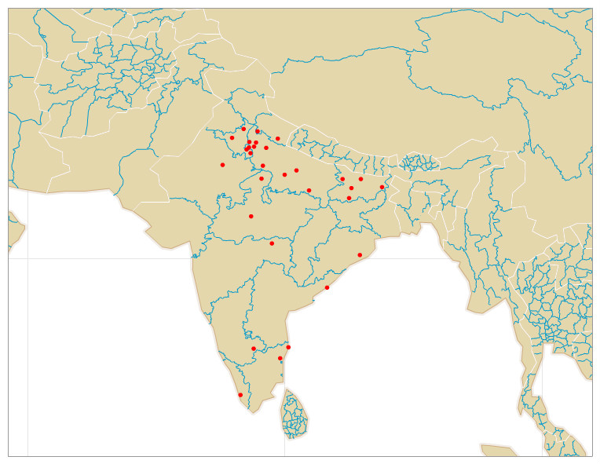
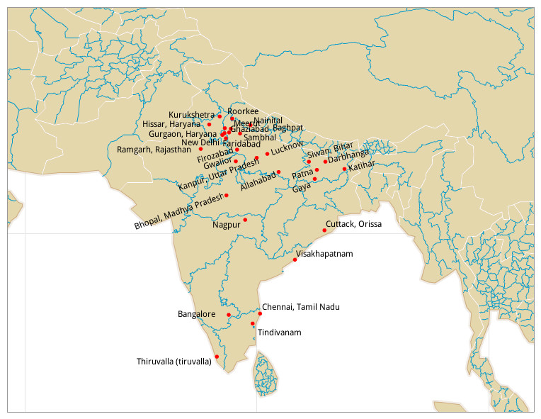
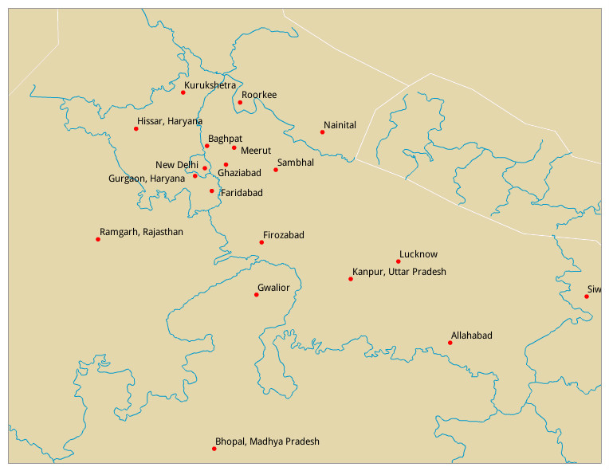

A small python script which generates the kml file having the coordinates of the hometowns of my FB friends. This kml file is then fed to the indiemapper to plot all the points on the world map.
Distribution
  Tools used-
1. facebook graph API (using facepy) 2. google geocoding service (using geopy) 3. indiemapperRequirements-
Install requirements by running,$ pip install facepy
$ pip install simplekml
$ pip install geopy
What is it doing?
It is using facepy which uses facebook graph API to fetch the results from Facebook. It has to be given an access_token (your access token, not mine) which will authenticate the script to fetch results on your behalf. After fetching the hometowns of each friend it uses the google geocoding service via geopy to convert the hometowns into lattitudes and longitudes. These lats and longs are then written in a friends_hometown.kml file using the simplekml module. The kml (keyhole markup language) is an XML notation for expressing geographic annotation and visualization within Internet-based, two-dimensional maps and three-dimensional Earth browsers (It's the wiki definition BTW ;)). Now, that we have our data in the required format we can plot it however we want. I just wanted to plot them on the World map, so I used [Indiemapper][4], which is a good mapping platform if you have the data.
Inspiration
Inspiration for this mini project was obtained when I was reading a few answers on this question asked on Quora. This question have 98 answers as of today. There are many bullshit answers but some are interesting. From the 2nd part of this answer where the bus travelers all over India on a day are plotted. This sparked an idea in my mind. How I reached the hometowns was due to my mother who was asking about the hailing places of my friends. Please don't ask me why? Even I don't know why.
To/Can be done...
There are a few things which can be done here. These things wont be of much magnitude but might help in beautifying the distribution images.
1. Try the above distribution with D3. There are very pretty visualizations which can be done by the D3. Although I have heard D3's learning curve is steep. 2. Display lines between New Delhi and other hometowns visualizing a star kind of thing. 3. Since I only have 100 FB friends and all are form India, I couldn't make the distribution over the whole World Map. Will try this later in life when I will be having more diversified friends (or I can try the script with someone who just makes FB friends blindly). SR.